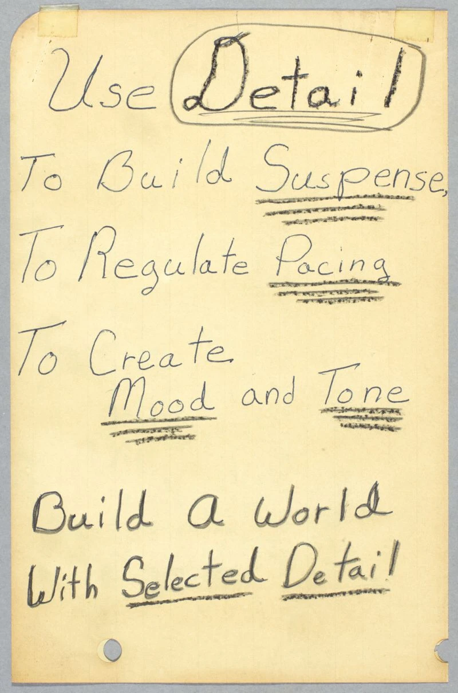
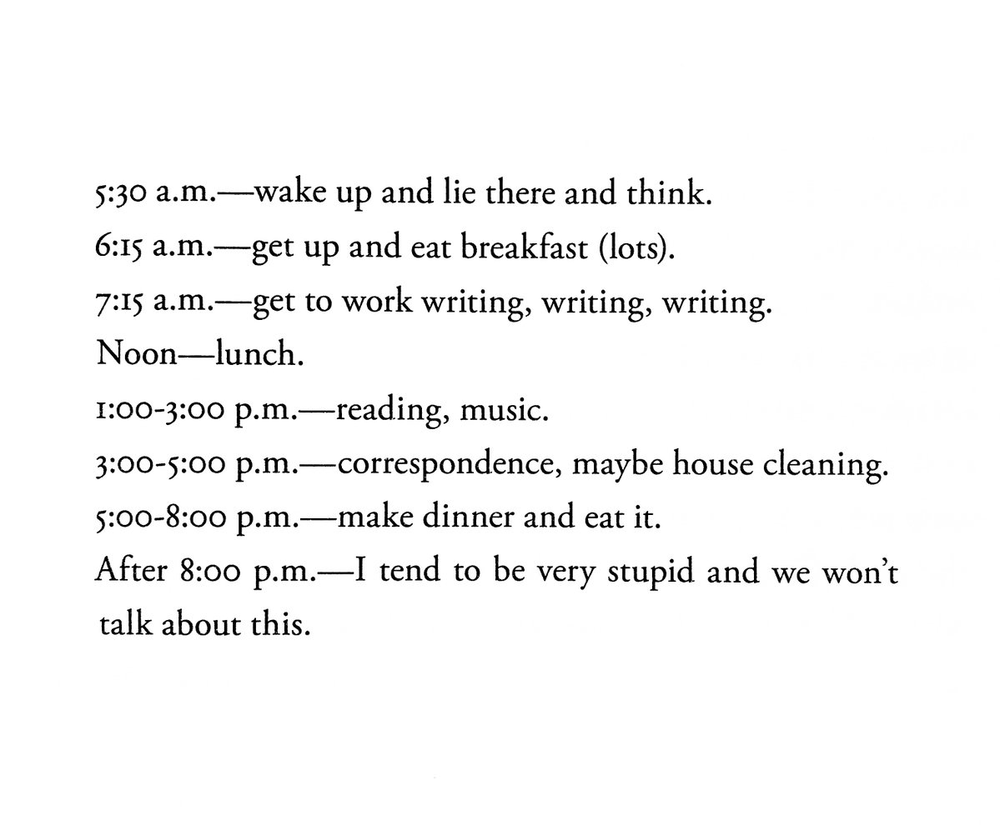

Core2
Spring 2021
M + W, 2 - 5:20p (EST)
Online
Links
syllabus
google drive
inspirations
Projects
daily practice
thek
iterative
composite
speculative space
Community
Meghan A.
Lindsay B.
Ana C.
Paige C.
Erin C.
Eliza D.
Celia D.
Noel F.
Amanda G.
Amanda H.
Kalib H.
Jenna M.
Fiona M.
Megan M.
Lindsay O.
Maddie S.
Julia S.
Helen T.
Paola V.
monday
wednesday
key: in class,
activity/homework
2/15
2/17
present/review composite projects
go over text collection
~~~
upload your composite project to your
google drive
folder
collect 3 paragraphs of text from distinct sources that you feel connect to your composite project in some way
when selecting, consider the mood, themes, tone, formal qualities, explicit details, etc of your project
sources can be anything: book, wikipedia, article, costar, wherever text is to be found
if you want you can write your own paragraph
maybe collect bits of text/writing from earlier responses to work into the writing...
once you’ve collected the paragraphs combine them in a single typeset image
Ian Cheng/speculative media discussion
look over
figma
/make account
reductive workshop
~~~
tbd
2/8
2/10
process check-in/conversation
talk about something you’ve been working on
interesting process?
any problems, troubles?
introduce
composite project
resources:
Kelsey Dusenka: Hard as Nails
MFA Seminar: Psychosphere
Linda Zeb Hang: Highest Spheres
Jeffrey Alan Scudder: vertical love lecture
Cassie McQuater: Point of Reference
Char Esme: QUEASY’S 1
Jason S. Wright: Surrender Paintings
~~~
work on
composite project
due next monday (2/15)
joy reading:
Cortney Cassidy: A Soft Manifesto
introduce
speculative space
watch:
Linda Zeb Hang: Printed Matter
further...
Linda Zeb Hang website
Cradle Regalia
Pattern Erosion
~~~
finish
composite project
required reading:
Ian Cheng: What is a World
start reading:
speculative everything ch.9
→ discuss 2/22
for class next week, select one example from any kind of media that represents speculative/fantasy fiction for you (and that inspires you) to introduce for discussion

a page from Octavia E. Butler's notebook
2/1
2/3
review Thek responses (small groups) ~45mins
through-lines?
interesting approaches, methodologies, materials?
what did you enjoy doing most?
anything unexpected?
what more to do?
watch:
Make/Think 2009 Daniel Eatock
further...
Daniel Eatock's Website
Eatock's Pecha Kucha
Eatock's Felt Tip Pens
~~~
refine and finalize responses
joy reading:
Eris Drew & Octo Octa: Everyday

Ursula K. Le Guin's writing schedule
submit final responses to google drive
watch:
Eric Timothy Carlson Objects + Methods Lecture
further...
Bon Iver - 29
Bon Iver - 10
Bon Iver - 755
introduce
iterative project
~~~
work on
iterative project
1/25
1/27
introductions
class site
syllabus
discord
introduce
daily practice
~~~
set up daily practice space (and send me link)
make 5-slide introductory presentation
1 photo
1 word
1 creature
1 vibe
1 wildcard
notes:
maybe you weave a narrative out of it
maybe everything is united by chaos
upload these slides to your blog
introductory presentations
introduce
thek project
Paul Thek: Meat Pieces
Paul Thek: Last Show
Paul Thek: Dinosaurs
Paul Thek: Notebooks
~~~
begin daily practice (5+ a week)
work on
thek project